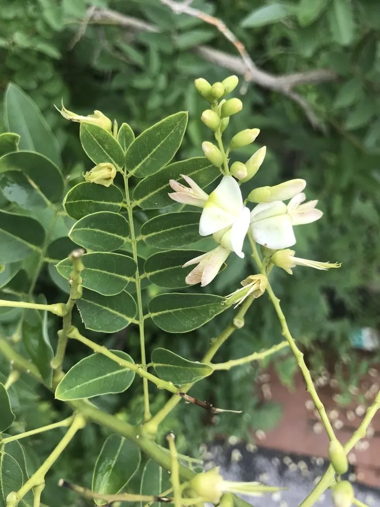

乔木 · 植物界
国槐 Styphnolobium japonicum

中国北方常见的落叶乔木，夏季开黄白色蝶形小花，是传统庭院树与行道树，花蕾可制中药“槐米”。
- 分类
- 门被子植物门纲木兰纲目豆目科豆科属槐属
- 栖息环境
- 海拔 2000 米以下的平原、丘陵与村庄旁，耐寒耐旱，适应性强
- 地理分布
- 中国南北各地广泛栽培，以华北、西北最为常见；日本、朝鲜亦有栽培
- 保护级别
- 暂无评估；中国未列入国家重点保护野生植物名录
物种志
国槐为落叶乔木，高可达 25 m，树冠圆球形，树皮灰褐色并具块状裂纹；奇数羽状复叶，小叶 7–17 枚，卵状长圆形，表面深绿。夏季开花，圆锥花序顶生，花冠蝶形、淡黄白色，雄蕊 10 枚离生；荚果呈念珠状，成熟时不开裂，冬季仍悬挂枝头。
国槐原产中国，栽培历史逾两千年，北方城乡常见，耐寒、耐旱、耐轻度盐碱，对土壤要求不严。未开放的花蕾经蒸煮干燥后即为中药“槐米”，可凉血止血；花可作黄色染料；木材坚硬，可制家具与农具；树形端正、遮荫效果好，是优良的行道树。民间有“门前一棵槐，不是招宝就是进财”的俗语。国槐与常见的刺槐容易混淆，前者小叶先端尖、荚果呈念珠状，后者枝条具托叶刺、荚果扁平；槐木耐腐，古代还常用于制作车辕与建筑构件。
形态与习性
- 株高可达 25 m，树冠圆球形
- 花期6–8 月，蝶形花淡黄白色
- 果期9–10 月，荚果念珠状，可宿存至冬季
- 光照喜光，不耐庇荫
- 水分耐旱，怕积水，年降水量 400 mm 以上可正常生长
- 土壤对土壤要求不严，耐轻度盐碱
- 主要用途行道树与庭荫树、槐米入药、木材制家具农具
趣味知识
- 国槐未开放的花蕾是中药“槐米”，开放的花称“槐花”，均可入药。
- 国槐的荚果呈念珠状，一节一节，冬季仍挂在树上，是辨识特征。
- “槐”与“怀”谐音，古人常在门前植槐，寄托怀乡念祖之情。